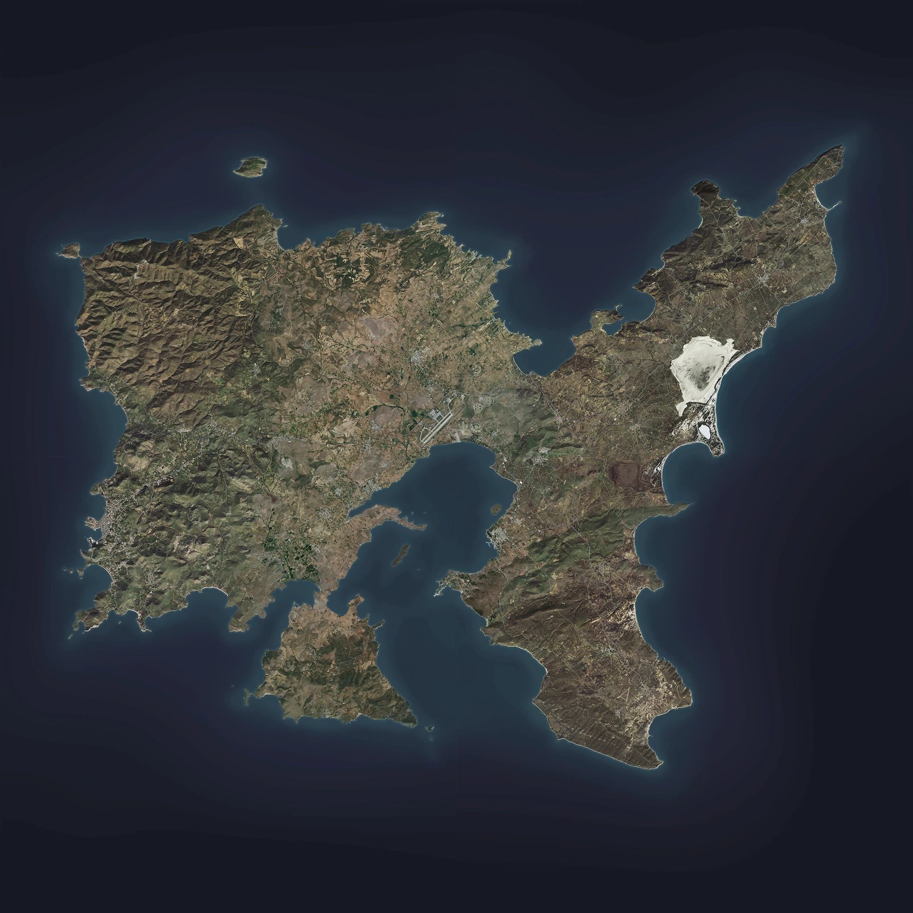

Acoperind o suprafata de 270,5 kilometri patrati, Altis este o insula vulcanica cu un peisaj ondulat si in mare parte stancos. Raspandite in regiunile mai indepartate ale arhipelagului sunt paduri mari de pini si ocazional afloriment de plantatii de copaci. Un desert minuscul exista si la nord de satul Abdera si este unic pentru starea sa de micro-mediu. Lungimea coastei lui Altis se intinde peste 200 de kilometri, cu un total de douazeci de golfuri care il inconjoara si ele. Cel mai mare dintre ele, Golful Pyrgos, este situat in sectorul central si imparte partial ambele jumatati ale insulei.